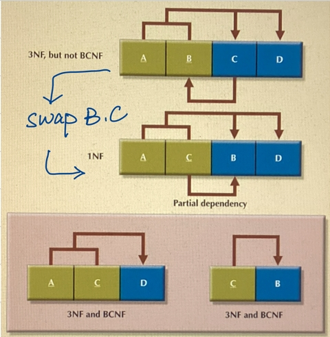
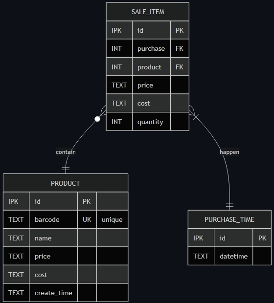
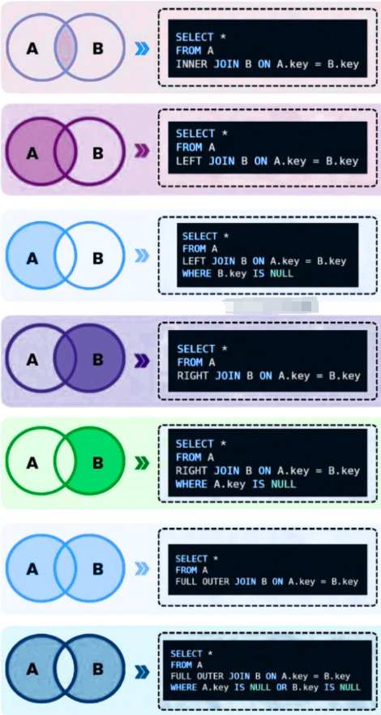

Database Design
Database is a system to manage data, which is built on file system offered by OS. Broadly speaking, there are two cases in which database is utilized:
- OLTP, OnLine Transaction Processing, for supporting daily business
- OLAP, OnLine Analysis Processing, for supporting data analysis in Data Warehouse
Database design is actually the design of data tables (entities) and their relationships. The design purposes are:
- store information without unnecessary redundancy
- retrieve information easily and fast
Normal Form (NF)
NFs are used to eliminate information redundancy. The higher NF, the less redundancy.
- 1NF: No Multi-value Cell. Each cell only contains one value. No multi-value cells. Null value is allowed. Primary key might has more than one columns (composite key).
- 2NF (Whole Key): No Partial Dependency. If primary key only contains one column, it’s 2NF satisfied. All non-key attributes must be fully dependent on the entire primary key.
- 3NF (Nothing but the Key): No Transitive Dependency. Every non-key attribute in a table must directly depend on the key, the whole key, and nothing but the key. For practice, 3NF is good enough! Higher NFs are more academic!
- BCNF: Boyce-Codd NF. No Reverse Dependency. All determinants must be keys!
- 4NF: No Multi-value Dependency.

Table Decomposition Example
Example of Multi-value Dependency:
A --> BC
A ->> B # multi-value dependency
B and C are independent with each other
Decompose:
A --> C
AB --> ∅ # only A and B in table
Due to speed requirement, the design for OLAP system migth be denormalized.
Primary Key (PK)
- Every table needs a PK.
- Non-null and Unique, for all columns in PK
- Immutability (practically, not just in theory): a PK value should never need to change once assigned. If it changes, every foreign key referencing it must cascade.
- Stability (optional): new keys are strictly greater than previous keys. In most engines, the primary key determines physical row order or is the most heavily used index, so its shape affects performance system-wide. That is why PK design matters so much more than picking any unique column as PK.
Natural Key vs. Surrogate Key
Natural Key: A column (or set of columns) that already exists in the real-world data and is inherently unique — e.g., email, SSN, ISBN, (country_code, license_plate).
- Pros:
- No extra column needed; the key means something.
- Prevents accidental duplicate entities (two rows can’t exist for the same email).
- Cons:
- Real-world “unique” things change more often than you’d think (emails change, company names change, government IDs get reissued in some countries).
- Often wide (a string, or a composite of several columns) — bigger, slower indexes, and every foreign key referencing it repeats that width.
- Business rules change: “surely two people can’t have the same SSN” turns out to have edge cases (shared family SSNs in some legacy systems, contractors without SSNs, etc.).
Surrogate Key: A system-generated identifier with no business meaning — typically an auto-incrementing integer or a UUID.
- Pros:
- Never needs to change, regardless of what happens to the business data.
- Small (if integer) and fast to index and join on.
- Decouples identity from data — you can fix a typo’d email without touching foreign key relationships everywhere.
- Cons:
- Meaningless on its own — you always need a separate unique constraint on the natural key anyway (e.g., unique index on email) to prevent duplicate entities.
- One more column, one more index.
Better Practice
- Use a surrogate key as the PK, but also put a unique constraint on the natural keys (UK, unique key). You get stability for joins and foreign keys, and you still get duplicate-prevention on the real-world identities.
- It might worth considering how to design surrogate key: incremental int or UUID, and depends on your external stability requirement.
Entity Relationship Diagram (ERD)
ERD is the broad category — any diagram showing entities (tables) and their relationships. It’s a concept, not a specific notation.
Crow’s Foot Notation is the most common specific notation style used to draw ERDs — it’s how you draw the relationship lines and cardinality (one-to-many, many-to-many, optional/mandatory) between entities. So the real choice isn’t “ERD or Crow’s Foot” — it’s “which notation do I use to draw my ERD,” and Crow’s Foot is by far the most practical, widely-used answer for real database schema work (as opposed to, say, Chen Notation, which is more academic/theoretical and rarely used in practice for actual schema documentation).
Crow's Foot Notation in Mermaid:
* Entities are tables
* --: represent identifying relationship
* ..: represent non-identifying relationship
* o: zero
* |: one
* { or }: many
* o,|,{,} could be bind with each other accordingly
An example, column types are in SQLite flexible typing style:
# Mermaid ERD
# type name PK|FK|UK "comments"
erDiagram
PRODUCT {
IPK id PK
TEXT barcode UK "unique"
TEXT name
TEXT price
TEXT cost
TEXT create_time
}
PURCHASE_TIME {
IPK id PK
TEXT datetime
}
SALE_ITEM {
IPK id PK
INT purchase FK
INT product FK
TEXT price
TEXT cost
INT quantity
}
SALE_ITEM }o--|| PRODUCT : contain
SALE_ITEM }|--|| PURCHASE_TIME: happen

ERD in Crow’s Foot Notation by Mermaid
- IPK equals INTEGER PRIMARY KEY, which defines an alias of ROWID.
- Price and cost are in TEXT type to support decimal computation!
- Price and cost are repeated in SALE_ITEM table represent the values at that purchase moment.
- Each sale item contains one products. Each product could be included in zero or many sale items.
- Each purchase time contains one or many sale items. Each sale item happens at one purchase time.
Design for OLTP and OLAP
OLTP (supports fast, frequent, small read/write operations) cares about correctness and speed of individual transactions. OLAP (support complex queries over large volumes of historical data) cares about speed of aggregation/join across huge datasets.
OLTP needs 3NF design. The goal is to avoid data duplication and anomalies. Every piece of data lives in exactly one place. OLAP sometimes needs denormalized design for speed. The goal is to minimize joins and make aggregation fast, even if it means repeating data.
In real systems, OLAP schemas are usually derived from OLTP schemas via ETL (Extract Transform Load) pipelines: raw normalized transactional data gets transformed, aggregated, and reshaped into a star/snowflake schema for reporting.
OLTP tables are named after what they are (a customer, an order). OLAP tables are named after what they do in a query (a fact gets aggregated, a dimension is what you group or filter by). It’s really a difference in modeling philosophy driven by the difference in workload.
Star, Snowflake and Constellation Schema
- Star schema: one fact table in the center, surrounded by dimension tables directly connected to it.
- Snowflake schema: like a star schema, but dimension tables are further normalized into sub-dimensions (so it “snowflakes” outward).
- Constellation (galaxy) schema: takes it a step further — multiple fact tables coexist and share some of the same dimension tables. Visually it looks like a galaxy of stars, hence the name.
Transaction
ACID
A database transaction symbolizes a unit of works, sometimes made up of multiple operations, performed within a database management system against a database, that is treated in a coherent and reliable way independent of other transactions. This is for keeping Data Integrity! A database transaction, by definition, must be:
- Atomic (no half change, all or nothing)
- Consistent (the change can only happen if the new state is valid, any attempt to commit an invalid change will fail, leaving the system at its previous valid state, from one valid state to another)
- Isolated
- Durable (it must get written to persistent storage)
Database practitioners often refer to these properties of database transactions using the acronym ACID.
Isolation Levels
Isolated isn’t one fixed guarantee — SQL defines four standard isolation levels, each permitting or preventing Three Phenomena:
- Dirty Read: a transaction reads another transaction’s uncommitted change, which might later be rolled back.
- Non-repeatable Read: a transaction reads the same row twice and gets different values, because another transaction committed a change to it in between.
- Phantom Read: a transaction re-runs the same range query and sees new rows that another transaction inserted and committed in between.
Four Standard Isolation Levels in PostgreSQL
- Read Uncommitted: weakest, essentially no isolation. Not implemented in PostgreSQL.
- Read Committed: only ever sees committed data, but a row can change between two reads in the same transaction. Default level in PostgreSQL.
- Repeatable Read: a row read once stays the same for the rest of the transaction. The SQL standard still permits phantoms here, but some engines are stricter than the standard requires — PostgreSQL’s Repeatable Read (built on snapshot isolation) also blocks phantoms in practice.
- Serializable: transactions behave as if run one at a time, in some order. No phenomena possible. Implemented either via heavier locking, or via optimistic conflict detection that aborts one transaction on conflict (e.g., PostgreSQL’s Serializable Snapshot Isolation).
-- PostgreSQL Default: Read Committed
BEGIN;
...
COMMIT;
-- PostgreSQL Repeatable Read
BEGIN ISOLATION LEVEL REPEATABLE READ;
SELECT * FROM users; -- snapshot fixed here
-- (another connection commits an INSERT)
SELECT * FROM users; -- SAME snapshot — insert is invisible
COMMIT;
SQLite Isolation Level
SQLite is effectively SERIALIZABLE, always the highest level! There’s no concept of multiple isolation levels like PostgreSQL’s READ COMMITTED / REPEATABLE READ / SERIALIZABLE.
SELECT in transaction
No explicit transactions needed for one-off SELECT statements. They run in implicit transations, fresh snapshot everytime.
In SQLite, wrapping multiple SELECTs in a transaction always gives you one consistent snapshot for free (it’s always serializable). In PostgreSQL, the same wrapping does not guarantee that by default — you get a fresh snapshot per statement under READ COMMITTED unless you explicitly request REPEATABLE READ or SERIALIZABLE.
Connection and Cursor
Before issuing SQL statements to database system, we need to connect it first. That’s database connection. Connection holds transactions and lock state.
A database cursor is a mechanism that enables traversal over the records from a database. It’s similar to the programming language concept of iterator. Cursors are used by programmers to process individual rows returned by database queries. In this scenario, a cursor enables the sequential processing of rows in a result set. A cursor can be viewed as a pointer to one row in a set of rows. The cursor can only refer to one row at a time, but can move to other rows of the result set as needed.
We can have multi-cursor for one connection. But they share transactions and lock state. They would never be real paralleled. We can use multi-cursor in safe nested queries in one thread, but not recommend for multi-thread cases. Each thread should have its own connection. That’s the standard pattern for both SQLite and PostgreSQL. Concurrent transactions are realized by multi-connection.
SQL
- Structure Query Language, ISO standard
- Case-Insensitive (key words, table and column names)
- Turing Complete since SQL:1999
- SQL does not guarantee the order of rows in a table in any way.
- The results are always a table (might be zero row), even there is only one value in a table which has one row and one column.
Column Constraints
PK and FK
CREATE TABLE [IF NOT EXISTS] orders (
id INT PRIMARY KEY,
customer_id INT,
FOREIGN KEY (customer_id) REFERENCES customers(id)
ON DELETE RESTRICT -- don't allow deleting a customer with orders
ON UPDATE CASCADE -- but if their ID changes, update it here too
);
Foreign Key ON UPDATE/DELETE
NO ACTION, default. If you omit ON DELETE/ON UPDATE entirely, most databases default to NO ACTION/RESTRICT-like behavior — the delete/update fails if references exist.RESTRICTCASCADE, propagates the change. If a parent row is deleted, matching child rows are deleted too. If the parent’s key is updated, the child’s foreign key value is updated to match.SET NULL, sets the child’s foreign key column to NULL when the parent row is deleted/updated. Requires the FK column to be nullable.SET DEFAULT
PostgreSQL distinguishes NO ACTION from RESTRICT in one meaningful way: NO ACTION can be deferred until the end of a transaction (if the constraint is declared DEFERRABLE), so you could delete a parent and insert a replacement/reassign children within the same transaction before it’s checked. RESTRICT checks immediately, no deferring allowed. If you don’t specify DEFERRABLE, they behave identically.
UNIQUE
NOT NULL
CHECK
DEFAULT
Single/Double Quotes
- Single quotes used to wrap string literals.
- Double quotes used to specify identifiers, names of tables, columns, schemas, etc, especially when those names are reserved keywords or reserved contain spaces or special characters.
-- PostgreSQL, month is reserved keywords
SELECT year_month "month" -- Double Quote for bare alias
SELECT year_month AS month -- AS alias
Three-Valued Logic (TVL or 3VL)
TRUE, FALSE and NULL which means UNKNOWN. Null is treated as False and one unique value.
# NOT
NOT TRUE IS FALSE
NOT FALSE IS TRUE
NOT NULL IS NULL
# AND
TRUE & TRUE IS TRUE
TRUE & FLASE IS FALSE
FALSE & FALSE IS FALSE
TRUE & NULL IS NULL
FALSE & NULL IS FALSE
# OR
TRUE | TRUE IS TRUE
TRUE | FALSE IS tRUE
FALSE | FALSE IS FALSE
TRUE | NULL IS TRUE
FALSE | NULL IS NULL
- In WHERE clause, NULL is treated as false.
- Comparison with NULL is NULL.
- Arithmetic operation with NULL ends up with NULL, including dividing by NULL.
(NULL = NULL) IS NULL
(NULL != NULL) IS NULL
(NULL = ...) IS NULL
(NULL != ...) IS NULL
(NULL [NOT] LIKE ...) IS NULL
(NULL [NOT] IN ...) IS NULL
(NULL IS NULL) IS TRUE
- SELECT DISTINCT treats null as a fixed value.
- GROUP BY treats null as a fixed value.
- ORDER BY treats null as a fixed value. (biggest or smallest)
- CHECK constraint treats null (unknown) as true. (use NOT NULL if wanting to disallow null value)
CREATE TABLE [IF NOT EXISTS] products (
id INT PRIMARY KEY,
price NUMERIC,
CHECK (price > 0)
);
INSERT INTO products VALUES (1, -5); -- FAILS: -5 > 0 is FALSE
INSERT INTO products VALUES (2, NULL); -- SUCCEEDS: NULL > 0 is NULL (unknown), not FALSE
- In general, aggregation functions would ignore null value.
Execution Order of SQL
- FROM – identify source table(s), change table names
- JOIN – merge tables
- WHERE – filter individual rows
- GROUP BY – group rows, reduce group into one row
- HAVING – filter grouped rows
- SELECT – pick/compute columns, Window/Aggregation Functions
- DISTINCT
- ORDER BY – sort the result
- LIMIT/OFFSET – restrict row count
Subqueries
- Scalar
- Column
- Correalted
- Table (CTE)
FROM JOIN
[INNER] JOINLEFT [OUTER] JOINRIGHT [OUTER] JOINFULL [OUTER] JOINCROSS JOIN, Cartesian Product
-- ways to do cross join
FROM t1 CROSS JOIN t2
FROM t1, t2 -- comma join
FROM t1 join t2 ON TRUE
JOIN also has the capability of selecting rows due to join conditions.
ONconditionsUSING (column,[...])specifys matching columns as condition in()NATURAL JOINfinds all matching columns as condition, fragile, not recommend

SQL JOIN
- JOIN ON non-unique column, fan-out effect, a cross-product within the matching key groups.
SELECT
- When their is no row, select returns empty.
- We can use
SELECTto evaluate scalar values, and change the name of columns w/oAS.
-- .mode column
sqlite> select 123;
123
---
123
sqlite> select 123 [as] abc;
abc
---
123
sqlite> select 123 abc, 234 bcd, 345 cde;
abc bcd cde
--- --- ---
123 234 345
-- .mode list
sqlite> select 1+2, 1-2, 2*3, 1/2, 1%2;
3|-1|6|0|1
-- cast(... as ...)
sqlite> select round(cast(123 as real)/23,4);
5.3478
- SELECT can be used to form Scalar Subquery. Scalar subquery can only return One Column One Row. If scalar subquery returns empty (zero row), the returned value is NULL.
-- scalar subquery with comparison
SELECT *
FROM employees
WHERE salary = (
SELECT MAX(salary)
FROM employees
);
-- CTE style
WITH max_sal AS (
SELECT MAX(salary) AS salary
FROM employees
)
SELECT *
FROM employees
WHERE salary = (SELECT salary FROM max_sal);
-- scalar subquery in SELECT
SELECT
e.employee_name,
e.salary,
(SELECT AVG(salary) FROM employees) AS avg_company_salary,
e.salary - (SELECT AVG(salary) FROM employees) AS diff_from_avg
FROM employees e;
-- single value
SELECT
c.customer_id,
c.customer_name,
(
SELECT o.order_id
FROM orders o
WHERE o.customer_id = c.customer_id
ORDER BY o.order_date DESC
LIMIT 1
) AS most_recent_order_id
FROM customers c;
SELECT DISTINCTis applied on multiple columns and treats the combination of those columns as the unit of uniqueness — not each column separately.GROUP BYis an alternative.
-- DISTINCT applies to the whole SELECT list, not just the column right after it
-- distinct combinations of all three columns
SELECT DISTINCT department, job_title, salary FROM employees;
Aggregation Functions
COUNT,SUM,AVG,MAX,and MIN.
COUNT(*), count all row, including null.COUNT(a), count column a, excluding null.COUNT(DISTINCT a), count distinct non-null of column a (may not support multi-column)COUNTnever return null, return 0 when no row!SUM,AVG,MAXandMINwould ignore null and return null if no non-null input.MAXandMINcould be applied to non-numeric datatypes as long as they can be compared, such as date, string, and etc.- They work on group level. When no GROUP BY clause, it’s just a big group that to be reduced into one row.
STRING_AGG/GROUP_CONCAT
-- PostgreSQL
SELECT sell_date,
COUNT(*) num_sold,
STRING_AGG(product, ',' ORDER BY product) AS products
FROM (
SELECT sell_date, product
FROM activities
GROUP BY sell_date, product
)
GROUP BY sell_date
ORDER BY sell_date;
-- SQLite, replace STRING_AGG with this line:
GROUP_CONCAT(product, ',' ORDER BY product) AS products
STRING_AGGis part of the SQL:2016 standard. That said, “standard” doesn’t mean “universal”.
CASE WHEN … THEN … ELSE … END
Could be used to modify column value just before it is shown up or used.
CASE
WHEN N < 1 OR N IS NULL THEN NULL
WHEN N > 100 THEN 100
ELSE N
END
CASE department
WHEN 'Sales' THEN 'S'
WHEN 'IT' THEN 'I'
ELSE 'X'
END
-- they are equival
CASE WHEN cr IS NULL THEN 0 ELSE cr END
COALESCE(cr, 0)
-- primary key (id,month)
-- case in aggregation function
SELECT id,
SUM(CASE WHEN month='Jan' THEN revenue ELSE NULL END) Jan_Revenue,
SUM(CASE WHEN month='Feb' THEN revenue ELSE NULL END) Feb_Revenue,
SUM(CASE WHEN month='Mar' THEN revenue ELSE NULL END) Mar_Revenue,
SUM(CASE WHEN month='Apr' THEN revenue ELSE NULL END) Apr_Revenue,
SUM(CASE WHEN month='May' THEN revenue ELSE NULL END) May_Revenue,
SUM(CASE WHEN month='Jun' THEN revenue ELSE NULL END) Jun_Revenue,
SUM(CASE WHEN month='Jul' THEN revenue ELSE NULL END) Jul_Revenue,
SUM(CASE WHEN month='Aug' THEN revenue ELSE NULL END) Aug_Revenue,
SUM(CASE WHEN month='Sep' THEN revenue ELSE NULL END) Sep_Revenue,
SUM(CASE WHEN month='Oct' THEN revenue ELSE NULL END) Oct_Revenue,
SUM(CASE WHEN month='Nov' THEN revenue ELSE NULL END) Nov_Revenue,
SUM(CASE WHEN month='Dec' THEN revenue ELSE NULL END) Dec_Revenue
FROM department
GROUP BY id;
-- LIKE in CASE WHEN
SELECT employee_id,
CASE WHEN name NOT LIKE 'M%' AND employee_id%2=1 THEN salary
ELSE 0
END bonus
FROM employees
ORDER BY employee_id;
GROUP BY … HAVING …
GROUP BY reduces many rows into one row per group (you lose the individual rows). GROUP BY answers: “For each distinct value (or combination) of these columns, give me one summary row.”
-- groups all employees by department, aggregate on each group
SELECT department, COUNT(*) AS employee_count, AVG(salary) AS avg_salary
FROM Employees
GROUP BY department;
-- find customers who spend more than 1000
SELECT customer_id, SUM(amount) AS total_spent
FROM Orders
GROUP BY customer_id
HAVING SUM(amount) > 1000;
-- group by combination of more than one column
SELECT department, YEAR(hire_date) AS hire_year, COUNT(*) AS num_hired
FROM Employees
GROUP BY department, hire_year;
Aggregation functions work on each group. But window functions (with OVER clause) can only work on row level (results after group).
WITH daily_total AS(
SELECT visited_on, SUM(amount) total
FROM customer
GROUP BY visited_on
)
SELECT visited_on,
SUM(total) OVER (
ORDER BY visited_on
ROWS BETWEEN 6 PRECEDING AND CURRENT ROW
) amount,
ROUND(AVG(total) OVER (
ORDER BY visited_on
ROWS BETWEEN 6 PRECEDING AND CURRENT ROW
),2) average_amount
FROM daily_total
ORDER BY visited_on
OFFSET 6;
Window Functions
Window functions perform calculations across a set of rows that are related to the current row — but without collapsing them into a single row, the way GROUP BY would. Each row keeps its identity, and gets an extra computed value attached to it based on a window of related rows.
-- syntax
function_name(...) OVER (
PARTITION BY column_a -- optional: split rows into groups
ORDER BY column_b -- optional: order rows within each group
)
/* PARTITION BY — divides the rows into groups
(like GROUP BY, but doesn't collapse them).
The window functions reset/restart for each partition!
ORDER BY (inside OVER()) — defines the order
in which rows are processed for ranking/running
calculations within each partition.
If you omit PARTITION BY, the whole table is treated as one big partition.
*/
Ranking
row_number(): unique sequential number, no ties, starts from 1rank(): ties share rank, leaves gapsdense_rank(): ties share rank, no gapsntile(N): split rows into n roughly equal buckets, ceil(row_number/N)percent_rank(): [0,1], (rank()-1)/(count(*) over() -1)cume_dist(): cumulative distribution
Offset
lag(expr,[N=1],[NULL]): looks at the values from N previous row in the ordered window, default NULL when not exist.lead(expr,[N=1],[NULL]): looks at the values from N following row, default NULL when not exist.first_value(expr): returns the first value in the window frame.last_value(expr): returns the last value in the window frame.nth_value(expr,N): returns the value from the Nth row of the window frame.
Running Total
Adding ORDER BY inside OVER() changes the frame from “whole partition” to “up through current row”.
SELECT name,
department,
salary,
SUM(salary) OVER (PARTITION BY department
ORDER BY salary DESC) AS running_total
FROM Employees;
----------------
WITH rsum AS(
SELECT person_id,
person_name,
SUM(weight) OVER (ORDER BY turn) rs
FROM queue
)
SELECT person_name
FROM rsum
WHERE rs <= 1000
ORDER BY rs DESC
LIMIT 1;
By default, all tied rows are included in running total! This is RANGE framing. If you want a strict row-by-row running total even with ties, use ROWS BETWEEN UNBOUNDED PRECEDING AND CURRENT ROW instead.
Moving Average
-- 3-day's moving average
SELECT
sale_date,
daily_sales,
AVG(daily_sales) OVER (
ORDER BY sale_date
ROWS BETWEEN 2 PRECEDING AND CURRENT ROW
) AS moving_avg_3day
FROM daily_sales_table
ORDER BY sale_date
[LIMIT -1] OFFSET 2;
/* The first day has no one to average,
the second day only has first day to average,
therefore OFFSET 2 makes sense! */
SQL result sets have no guaranteed order unless you explicitly sort them. Without the trailing ORDER BY, the database is free to return rows in whatever order is convenient internally — which often looks sorted (especially on a small example table scanned in order) but isn’t guaranteed. On a larger table, with parallel execution, indexes, or a different query plan, you could easily get rows back out of order even though the window calculation itself was done correctly.
Frame Clause
PARTITION BY picks the group. ORDER BY picks the order. The frame clause picks exactly which rows within that ordered group get fed into the function for the current row.
/* This means: "start from the first row of the partition,
and go all the way down to the current row — nothing after it." */
ROWS BETWEEN UNBOUNDED PRECEDING AND CURRENT ROW
/* Keyword Meaning
UNBOUNDED PRECEDING Start of the partition
N PRECEDING N rows before current
CURRENT ROW The current row
N FOLLOWING N rows after current
UNBOUNDED FOLLOWING End of the partition*/
ROWS BETWEEN ... AND ...
INSERT INTO
INSERT INTO <table>[col,...] VALUES (...)[,(...)];
-- insert default value for every column
INSERT INTO purchase_time DEFAULT VALUES;
UPDATE
UPDATE table_name
SET column1 = value1, column2 = value2
WHERE condition;
-- UPDATE with CASE WHEN
UPDATE salary
SET sex = CASE WHEN sex='m' THEN 'f' ELSE 'm' END;
DELETE FROM
DELETE FROM table_name
WHERE condition;
/* THIS IS DANGEROUS:
DELETE FROM table_name; <--- T_T
WHERE condition;
*/
WHERE <conditions>
<, >, =, <=, >=, <>, !=
Case-sensitive when comparing string literal in single quotation!
AND, OR, NOT
IS [NOT] TRUE|FALSE|NULL
[NOT] LIKE
%: 0+, zero or more characters_: 1, single character
In SQLite, LIKE is case-insensitive by default. In PostgreSQL, LIKE is case-sensitive, and we have a non-standard ILIKE which is case-insensitive. LIKE could be used in CASE WHEN clause.
-- turn on SQLite case sensitive LIKE
PRAGMA case_sensitive_like = ON;
RE
-- PostgreSQL: ~ means re matching
SELECT user_id, name, mail
FROM Users
WHERE mail ~ '^[a-zA-Z][a-zA-Z0-9_.-]*@leetcode\.com$';
[NOT] BETWEEN … AND … (inclusive)
-- BETWEEN ... AND ... can also compare string literals alphabetically
SELECT * FROM Products
WHERE ProductName BETWEEN 'Geitost' AND 'Louisiana Hot Spiced Okra'
ORDER BY ProductName;
[NOT] IN (Column Subquery)
SELECT * FROM employees
WHERE department IN ('Sales', 'Marketing');
-- IN (SELECT ...), Column Subquery
SELECT name FROM employees
WHERE dept_id IN (
SELECT dept_id FROM departments WHERE budget > 150000
);
/*
x IN (1,2,NULL) behaves exactly like x IN (1,2) from
the WHERE clause's perspective — matches get included,
everything else gets excluded. The NULL is harmless here.
x NOT IN (1,2,NULL) is always FALSE!!!
≡ NOT (x = 1 OR x = 2 OR x = NULL)
(FALSE or FALSE or UNKNOWN) = UNKNOWN
NOT UNKNOWN = UNKNOWN = FALSE
*/
[NOT] EXISTS
Instead of comparing values, EXISTS checks whether the subquery returns any rows.
SELECT name FROM employees e
WHERE EXISTS (
SELECT 1 FROM departments d
WHERE d.dept_id = e.dept_id AND d.budget > 150000
);
Correlated Subsquery
Subquery refers to the outer query’s row.
/* For each employee e1, the subquery computes the
average salary of just that employee's department,
then compares. */
SELECT e1.name, e1.salary, e1.dept_id
FROM employees e1
WHERE e1.salary > (
SELECT AVG(e2.salary)
FROM employees e2
WHERE e2.dept_id = e1.dept_id
);
-- inner select can be in SELECT clause as well
WITH pc AS(
SELECT tr.id,
tr.p_id pid,
(SELECT COUNT(*) FROM tree t WHERE t.p_id=tr.id) n_child
FROM tree tr
)
SELECT id,
CASE WHEN pid IS NULL THEN 'Root'
WHEN n_child=0 THEN 'Leaf'
ELSE 'Inner'
END type
FROM pc;
ANY (SOME), ALL
SELECT ProductName
FROM Products
WHERE ProductID = ANY (
SELECT ProductID
FROM OrderDetails
WHERE Quantity = 10
);
SOME is just a syntactic synonym for ANY — same behavior, same rules, interchangeable everywhere.
-- equivalent to NOT IN — matches only if it equals none of them
SELECT name FROM employees
WHERE dept_id <> ALL (
SELECT dept_id FROM departments WHERE budget > 150000
);
-- comparison form: greater than every value
-- i.e. greater than the MAXIMUM salary in Sales
SELECT name, salary FROM employees
WHERE salary > ALL (
SELECT salary FROM employees WHERE department = 'Sales'
);
Quick mental shortcut:
- x > ANY (…) → x beats the minimum of the set
- x > ALL (…) → x beats the maximum of the set
- x = ANY (…) ≡ x IN (…)
- x <> ALL (…) ≡ x NOT IN (…)
Row Set Operations
The queries being combined must have the same number of columns, in the same order, with compatible data types. Column names in the result come from the first query.
UNION [ALL], all means keep duplicationsINTERSECT [ALL], all means min(a,b)EXCEPT [ALL], all means max(a-b,0)
{1,2,3,4,1,3} except {1,2,3,4} --> {}
except all {1,2,3,4} --> {1,3}
-- ORDER BY must be at last
SELECT name, department FROM current_employees
UNION
SELECT name, department FROM former_employees
ORDER BY name;
Common Table Expression (CTE)
WITH <table_name> AS (...) create a named, temporary result set that only exists for the duration of the query that follows it.
-- basic syntax
-- more clean and readable than subquery
WITH <name> AS (
SELECT ...
)
SELECT ...
FROM <name>;
-- CTEs can be chained
WITH cte1 AS (
SELECT ...
),
cte2 AS (
SELECT ... FROM cte1 ...
)
SELECT * FROM cte2;
-- Recursive CTE
WITH RECURSIVE <name> AS (
-- 1. Anchor member (base case)
SELECT ...
UNION ALL -- always union all
-- 2. Recursive <name>
-- only compute new rows produced by most recent iteration,
-- until no new rows added!
SELECT ...
FROM <name>
WHERE ...
)
SELECT * FROM <name>;
-- recursive CTE example (SQL loop)
WITH RECURSIVE cte AS (
SELECT 1 AS n -- anchor: start at 1
UNION ALL
SELECT n + 1 FROM cte -- recursive: add 1 each time
WHERE n < 5 -- stop condition: No New Rows!
)
SELECT * FROM cte;
-- It's more like a loop, not recursive function!
-- Recursive here means refering to the same table (itself).
-- In the loop, everytime only deal with new rows.
-- Stop when there is no new rows!
-- Subquery (Derived Table)
-- The same as CTE, but less readable.
SELECT customer_number
FROM (
SELECT customer_number, count(*) n
FROM orders
GROUP BY customer_number
) t -- <- alias is required
ORDER BY n DESC
LIMIT 1
-- only one WITH at top
WITH greatest_user AS(
SELECT u.name,
COUNT(*) n_rating
FROM movierating m
JOIN users u
ON m.user_id = u.user_id
GROUP BY u.user_id, u.name
ORDER BY n_rating DESC, u.name
LIMIT 1 -- has to be in CTE when UNION
),
highest_avg AS(
SELECT mv.title,
AVG(mr.rating) avg_rating
FROM (
SELECT movie_id, rating
FROM movierating
WHERE TO_CHAR(created_at,'YYYY-MM') = '2020-02'
) mr JOIN movies mv ON mr.movie_id = mv.movie_id
GROUP BY mv.title
ORDER BY avg_rating DESC, mv.title
LIMIT 1
)
SELECT name AS results FROM greatest_user
UNION ALL -- in case name and title are the same
SELECT title FROM highest_avg;
View
CTEs are temporary tables which could only be used in the defining SQL statements. Views are permanent table schema saved in database and could be used anytime anywhere. It’s like functions to make re-using SQL code possible.
-- TEMP VIEW would be dropped automatically when connection is closed
CREATE [TEMP] VIEW high_earners AS
SELECT * FROM employees WHERE salary > 100000;
DROP VIEW [IF EXISTS] <view_name>;
SQLite doesn’t support Materialized View. Materialized views exist mainly to speed up expensive, repeated queries on large, mostly-static datasets — think data warehousing, reporting servers, or OLAP workloads with millions/billions of rows. SQLite is not built for this purpose.
Index
SQL indexes are a way to speed up data retrieval in a database by creating a structure (such as B-Tree) that lets the database find rows without scanning the entire table. Generally speaking, across virtually all major relational databases, declaring PRIMARY KEY or UNIQUE causes the database to automatically create and maintain an index to enforce that constraint. You never need to write CREATE INDEX yourself for those unique columns. Foreign keys are generally NOT auto-indexed.
-- index can be created on non-unique columns
-- unique is an alternative way to add unique constraint to column
CREATE [UNIQUE] INDEX <index_name> ON <table(col[,...])>;
Parameterized Query
This is for database engine, where normally ? is a placeholder for a value. This is genuinely a two-step database process, and it’s design for avoiding SQL injection attacks.
- Step 1: You send the SQL to the database with placeholders
?instead of actual values. The database parses and compiles the query structure once, without knowing the actual data yet. - Step 2: You supply the actual values to substitute for each
?, in order, and the database runs the compiled query with those values.
The
executeandexecutemanyin sqlite3 module of Python are designed in this way. Always use?placeholder! However, different database engines are different. E.g. SQLite doesn’t support ? in frame bounds (ROWS BETWEEN …), but PostgreSQL supports this.
Standard Function
COALESCE(a,b,...): return the first non-null valueCURRENT_TIMESTAMP: current UTC datetimeCURRENT_DATE: current UTC dateCURRENT_TIME: current UTC time
sqlite> SELECT CURRENT_DATE, CURRENT_TIME, CURRENT_TIMESTAMP;
current_date current_time current_timestamp
------------ ------------ -------------------
2026-08-25 22:06:48 2026-08-25 22:06:48
ROUND(x[,d])ABS(x)LOWER(string)UPPER(string)
SQLite
- Small. Fast. Reliable. Choose any three. https://www.sqlite.org/
- Disk file database, not client-server architecture.
- Lightweight, Embedded, Zero configuration, Severless.
Concurrency
Concurrency is Logic. Parallel is Physical!
SQLite uses OS-level File Locks on the database file itself to coordinate access between processes and threads. This is fundamentally different from client-server databases, such as PostgreSQL, where a single server process arbitrates access. With SQLite, every process that opens the file is a peer, and they negotiate access through the filesystem’s locking primitives (fcntl in Linux).
Because locking depends on OS-level file locks, the database file must live on a filesystem that correctly implements locking. Network filesystems (NFS, SMB, some cloud-synced folders like Dropbox) often have buggy or incomplete lock implementations, which is why SQLite documentation explicitly warns against using it there for concurrent access.
Rollback Journal Mode (default)
Under the default rollback journal mode, the database file locking is just like a classic Read-Write Lock (RW-Lock). SQLite move through five lock states:
- UNLOCKED – no lock held, process hasn’t touched the file yet
- SHARED – process wants to read, and multiple processes can hold SHARED simultaneously
- RESERVED – process intends to write soon (e.g. began a write transaction); one process at a time, but readers with SHARED can continue read
- PENDING – transitional state; writer is waiting for existing readers to finish, and no new SHARED locks are allowed to start
- EXCLUSIVE – writer has sole access; needed to actually commit changes to the file
Key rule: only one writer at a time, and a writer must wait for all readers to release their SHARED locks before it can escalate to EXCLUSIVE and commit. This is why concurrent writes from multiple processes will block or fail with SQLITE_BUSY if not handled properly.
Write-Ahead Logging (WAL) Mode
Under WAL mode, you could get better concurrent performance.
- Writers append changes to a separate
-walfile rather than modifying the main database file directly - Readers read from a consistent snapshot (main db + relevant WAL frames) and are not blocked by writers
- Only one writer at a time is allowed as well, but readers no longer block writers, and writers no longer block readers
- Periodically, a checkpoint operation copies WAL contents back into the main database file
- WAL mode requires a filesystem that supports shared memory (mmap,
-shmfile), which is another reason network filesystems are problematic
/* enable WAL mode, this is a persistent settting! */
PRAGMA journal_mode=WAL;
/* go back to the default rollback mode */
PRAGMA journal_mode=DELETE;
Multi-Version Concurrency Control (MVCC)
WAL is one of the implementation of MVCC idea. Instead of making readers and writers fight over the same copy of data, MVCC keeps multiple versions of data around so readers can see a consistent snapshot from a point in time, while writers create new versions without disturbing that snapshot.
- When a read transaction starts, SQLite records the current end of the WAL file — this defines that reader’s snapshot boundary
- The reader reads pages by checking: “is there a newer version of this page in the WAL, at or before my snapshot boundary? If yes, use that. If no, use the main db file.”
- Writers append new page versions to the end of the WAL — past the boundary any existing reader is using — so they never collide with what a reader is looking at
- Multiple readers can each have different snapshot boundaries simultaneously, all reading consistent (if slightly different-in-time) views
- Because old page versions in the WAL can’t be discarded until the last reader referencing them finishes, long-running read transactions directly block WAL reclamation — this is the mechanism behind the “WAL keeps growing” problem
PostgreSQL also utilizes the same MVCC idea to improve concurrency!
There’s still Only One Writer at a time in SQLite. MVCC in SQLite solves reader/writer contention, not writer/writer contention. That’s still a plain mutex (the WAL-file write lock).
How Checkpoint Operation Works
In WAL mode, writes don’t touch the main .db file — they’re appended as frames to the -wal file. Checkpointing is the process of taking those WAL frames and writing them back into the main database file, then (potentially) resetting the WAL.
The basic algorithm:
- Walk through the WAL file frame by frame
- For each page that was modified, copy the latest version of that page from the WAL into the corresponding position in the main .db file
- If a page was written multiple times across different transactions in the WAL, only the last version needs to be copied (checkpointing coalesces this automatically)
- Once all frames are copied, if no readers are still using older WAL frames, the WAL can be reset (truncated or overwritten from the start)
When Checkpoints Happen
By default, SQLite triggers an automatic checkpointing (PASSIVE mode) when the WAL file grows past 1000 pages (roughly 4MB at the default 4KB page size). This happens as part of a regular write transaction commit, on whichever connection happens to trigger the threshold.
/* change the page number threshold,
0 disables automatic checkpointing entirely,
useful if you want to control checkpointing manually,
e.g., during low-traffic windows */
PRAGMA wal_autocheckpoint = N;
There are 4 checkpoint operation modes:
- PASSIVE
- Checkpoints as many frames as possible without blocking anyone
- Does not wait for readers to finish, does not block new readers or writers from starting
- If a reader is holding a snapshot that references old WAL frames, PASSIVE simply stops at the boundary it can’t cross and returns — partial progress is fine, no error
- Safest, least disruptive, but may leave the WAL file large if there’s a slow/stuck reader
- This is what runs automatically at the 1000-page threshold
- FULL
- Blocks new writers from starting (but doesn’t block readers)
- Waits for all in-progress writers to finish (there’s at most one anyway)
- Checkpoints all frames up to the point where no active reader still needs them
- Will still stop short if a reader is holding an old snapshot — it just waits longer / tries harder than PASSIVE, but doesn’t forcibly kick readers out
- Does not guarantee the WAL is reset back to the beginning afterward
- RESTART
- Does everything FULL does, plus: once the checkpoint completes, it ensures that the next write will start writing the WAL from the beginning again (logically resets the WAL sequence)
- Blocks new readers from starting partway through, briefly, to safely perform this reset
- Still doesn’t shrink the file on disk — the WAL file’s size stays the same, just its logical content resets
- TRUNCATE
- Does everything RESTART does, plus: actually truncates the -wal file on disk back to 0 bytes
- The strongest mode — most likely to briefly block concurrent connections to complete
- Best for reclaiming disk space, e.g., after a bulk import or during a maintenance window
/* manually trigger checkpoint operation,
you may need to check return values. */
PRAGMA wal_checkpoint(TRUNCATE);
Better Practice
- set WAL as default. Don’t mix journal modes.
- set Busy Timeout.
PRAGMA busy_timeout = 5000;, so that when a process hits a lock conflict, it retries for up to N milliseconds instead of immediately erroring with SQLITE_BUSY. (could be set by connect API in Python sqlite3 module) - Short Transaction. Keep write transactions as short as possible to minimize the window where other writers are blocked. Keep read transaction short could help WAL checkpointing and avoid “WAL keeps growing” issue.
Threading Modes
SQLite could be compiled into 3 different threading modes:
- Single-thread: no mutexes at all, using it from more than one thread is undefined behavior.
- Multi-thread: safe to use different connections from different threads simultaneously, but a single connection must not be used by more than one thread at a time.
- Serialized (the default in most builds, including Python’s sqlite3 module): SQLite wraps connection-level operations in an internal mutex, so sharing one connection across threads won’t corrupt data. But it means threads are queued/serialized the moment they touch that connection, and transaction’s might be interleaved with each other.
Serialization is in SQL statement level, or low C API call level. It does not understand or protect the logical transaction you’re building across multiple calls. Therefore, Python’s default behavior of preventing sharing one single connection to multi-thread makes sense.
>>> import sqlite3
# 3 means serialized threading mode in Python
>>> sqlite3.threadsafety
3
Transaction Modes
Transactions can be DEFERRED, IMMEDIATE, or EXCLUSIVE in SQLite. DEFERRED is the default. They are all about how and when to acquire the lock of DB file.
BEGIN DEFERRED; -- default if you just say BEGIN
BEGIN IMMEDIATE; -- only block other writers IMMEDIATELY
BEGIN EXCLUSIVE; -- nobody touches this database at all until I'm done
Starting a transaction and acquiring a lock are two separate events in SQLite, which is unlike many other databases where they happen together. When you run BEGIN DEFERRED, SQLite does not acquire any lock at that moment. It’s genuinely deferred. The transaction is logically open, but no lock exists yet.
BEGIN DEFERRED; -- no lock yet
SELECT * FROM accounts; -- acquires a SHARED (read) lock, only now
UPDATE accounts SET balance = 0; -- attempts to upgrade to a RESERVED (write) lock, only now
COMMIT;
IMMEDIATE causes the database connection to start a write lock immediately, without waiting for a write statement. The BEGIN IMMEDIATE might fail with SQLITE_BUSY if another write transaction is already active on another database connection. EXCLUSIVE is similar to IMMEDIATE in that a write transaction is started immediately. EXCLUSIVE and IMMEDIATE are the same in WAL mode, but not exactly in rollback journal mode in which EXCLUSIVE prevents other database connections from reading the database while the transaction is underway, and IMMEDIATE only blocks other writers; readers can still proceed concurrently.
Autocommit Mode
By default, SQLite runs in autocommit mode. If you never call BEGIN at all, every single statement is automatically wrapped in its own implicit transaction and committed immediately after it runs.
Turn on autocommit (e.g. in Python), explicitly control all your transactions! For PostgreSQL, it has the same autocommit mechanism, but it is a client-server convention, not a database-level setting the way it is in SQLite. PostgreSQL itself always requires a transaction to run a statement — the client just auto-wraps each statement in an implicit transaction and commits it right away if you haven’t started one yourself.
Flexible Typing
Unlike most SQL databases, SQLite doesn’t enforce that a column can only holds one data type — any column can store any value of any Storage Classes: NULL, INTEGER, REAL, TEXT, or BLOB, regardless of the declared type in CREATE TABLE. Type affinity is SQLite’s middle ground: it’s a recommendation for what type of data a column prefers to store, and SQLite will try to coerce inserted values toward that preference, but it won’t refuse to store a mismatched type.
- Datatype names on column definitions are optional. A column definition can consist of just the column name and nothing else.
- SQLite began as a TCL extension that later escaped into the wild. TCL is a dynamic typing language in the sense that the programmer does not need to be aware of datatypes.
- When datatype names are provided, they can be just about Any Text. SQLite attempts to deduce the preferred datatype for the column based on the datatype name in the column definition, but that preferred datatype is only advisory, not mandatory. The preferred datatype is known as the Column Affinity.
- An attempt is made to transform incoming data into the preferred datatype of the column. If this transformation is successful, all is well. But if unsuccessful, instead of raising an error, SQLite just stores the content using the original datatype of incoming data.
SQLite is less restrictive!
5 Column Affinities
Every column gets assigned exactly one of the affinities based on its declared type:
- TEXT
- INTEGER
- REAL
- BLOB (also called “no affinity” — no coercion attempted at all)
- NUMERIC (the catch-all default)
- If the declared type contains the substring “INT” → INTEGER affinity
- Else if it contains “CHAR”, “CLOB”, or “TEXT” → TEXT affinity
- Else if it contains “BLOB”, or no type is specified at all → BLOB affinity
- Else if it contains “REAL”, “FLOA”, or “DOUB” → REAL affinity
- Else → NUMERIC affinity (the catch-all default)
NUMERIC affinity: attempts to convert text to INTEGER or REAL if the text is losslessly convertible (e.g., ‘123’ → integer, ‘3.5’ → real). If conversion would lose information (like ‘123abc’), the value is stored as-is in its original TEXT form. NULL and BLOB pass through unchanged.
All data are stored in SQLite database files by SQL statements. In SQL statements, the incoming data types are specified. ‘Hello’ -> TEXT. X'1234ABEF’ -> BLOB (X or x followed hexadicimal string). SQLite never converts a BLOB into TEXT automatically via column affinity. No conversion occurs for NULL as well.
sqlite> CREATE TABLE demo (
a INTEGER, -- INTEGER affinity
b TEXT, -- TEXT affinity
c BLOB, -- BLOB affinity (none)
d NUMERIC, -- NUMERIC affinity
e REAL -- REAL affinity
);
sqlite> INSERT INTO demo VALUES ('5', '5', '5', '5', '5');
sqlite> SELECT typeof(a), typeof(b), typeof(c), typeof(d), typeof(e) FROM demo;
integer|text|text|integer|real
sqlite> INSERT INTO demo VALUES ('5', '5', '5', null, '5');
sqlite> SELECT typeof(a), typeof(b), typeof(c), typeof(d), typeof(e) FROM demo WHERE rowid=2;
integer|text|text|null|real
Max-Length for TEXT and BLOB
The real ceiling on how much you can store in a single TEXT or BLOB value is a compile-time setting:
- Default: 1,000,000,000 bytes (1 billion bytes, ~954 MiB)
- This is a compile-time constant (SQLITE_MAX_LENGTH), configurable up to a hard ceiling of
2^31 - 1(about 2.1 GB) — it cannot be raised beyond that even by recompiling, since the internal length field is a signed 32-bit integer - It can also be lowered at runtime (but never raised beyond the compiled-in max) via sqlite3_limit(db, SQLITE_LIMIT_LENGTH, newValue), or PRAGMA isn’t used for this one — it’s purely a C API call, not exposed as a PRAGMA
Unless whoever built your SQLite binary changed the default, you can store up to ~1GB in a single TEXT or BLOB value. If you really need length constraint, use CHECK on table definition.
-- check constraint
-- length function returns number of characters for TEXT,
-- and number of bytes for BLOB.
CREATE TABLE users (
id INTEGER PRIMARY KEY,
-- TEXT: Must be between 3 and 20 characters, inclusive
username TEXT CHECK(LENGTH(username) BETWEEN 3 AND 20),
-- TEXT: Maximum of 255 characters
bio TEXT CHECK(LENGTH(bio) <= 255),
-- BLOB: Maximum size of 1 MB (1,048,576 bytes)
avatar BLOB CHECK(LENGTH(avatar) <= 1048576),
-- Optional column, but if provided, must be between 5 and 50 characters
address TEXT CHECK(address IS NULL OR LENGTH(address) BETWEEN 5 AND 50)
);
Strict Table
Introduced in SQLite 3.37.0 (2021), STRICT is an opt-in table-level modifier that turns off SQLite’s normally-flexible type system for that table and enforces actual type checking on insert/update. With STRICT, an insert that can’t be sensibly converted to the declared type is rejected with an error instead of silently stored as an affinity type. There are 6 types in strict table:
- INT
- INTEGER (for ROWID column)
- REAL
- TEXT
- BLOB
- ANY (dynamic type column in strict table)
CREATE TABLE t (a INTEGER, b TEXT, c REAL) STRICT;
ROWID (Default PK)
Every row in an ordinary SQLite table has a 64-bit signed integer key called rowid, which uniquely identifies that row within the table. Rowid exists whether or not you ever reference it explicitly — it’s the physical key SQLite’s underlying B-tree structure uses to store and look up rows. Unless a table is declared WITHOUT ROWID, this key is always there. Rowid starts from 1 as well.
sqlite> CREATE TABLE person (name TEXT);
sqlite> INSERT INTO person VALUES ('tom'), ('jack');
sqlite> SELECT rowid,* FROM person;
1|tom
2|jack
Create ROWID’s Alias
sqlite> CREATE TABLE bb (id INTEGER PRIMARY KEY, name TEXT);
sqlite> INSERT INTO bb(name) VALUES('tom'),('jacky');
sqlite> INSERT INTO bb(id,name) VALUES(5,'xinlin');
sqlite> SELECT rowid,* FROM bb;
1|1|tom
2|2|jacky
5|5|xinlin
Only literal INTEGER PRIMARY KEY works.
ROWID Assignment
If you insert a row without specifying the rowid column (or explicitly insert NULL into it), SQLite auto-assigns one:
- Default algorithm: current max rowid in the table + 1
- If the table is empty, it starts at 1
- If the max rowid is already 9223372036854775807 (the largest signed 64-bit int), SQLite instead searches for an unused value at random — this is a fallback edge case you’ll essentially never hit in practice, but it’s documented behavior, not an error
Rowids get reused after deletion under this default scheme. If your table has rows with rowids 1, 2, 3 and you delete row 3, the next insert gets rowid 3 again (since max+1 logic just looks at current max, which is now 2). This is fine for most uses but dangerous if your application logic assumes rowids are permanently unique across the lifetime of the table (e.g., using them as external references, foreign keys held outside the transaction, or cache keys).
AUTOINCREMENT — Preventing Reuse
CREATE TABLE t (id INTEGER PRIMARY KEY AUTOINCREMENT, name TEXT);
Keyword AUTOINCREMENT changes the value assignment algorithm: instead of max(rowid)+1 at insert time, SQLite tracks the highest rowid ever used in a hidden system table called sqlite_sequence, and always allocates strictly higher than that historical high-water mark — even if rows with high rowids were later deleted. This guarantees monotonically increasing, never-reused rowids for the lifetime of the table.
Trade-offs of AUTOINCREMENT:
- Extra overhead: every insert row needs to check/update the sqlite_sequence table, so it’s measurably slower than plain INTEGER PRIMARY KEY — the SQLite docs explicitly recommend avoiding it unless you actually need the no-reuse guarantee
- Can fail with
SQLITE_FULLonce the sequence is exhausted at the 64-bit max, since it won’t fall back to the random-search behavior plain rowid tables use - Only valid combined with
INTEGER PRIMARY KEY— you cannot apply AUTOINCREMENT to a rowid alias declared any other way
When to actually use it: if externally-visible IDs need to never repeat, even across deletes (e.g., you’re handing out these IDs in URLs, API tokens, references stored in other systems) — otherwise, skip it.
Explicit ROWID Assignment
You can specify any rowid value yourself, even negative values:
INSERT INTO t (id, name) VALUES (100, 'x');
-- negative rowids are legal
-- rowid literal name could be directly used
INSERT INTO aa (rowid, name) VALUES (-5, 'y');
Rowids can be negative — the auto-assignment algorithm never picks a negative value on its own, but nothing stops you from inserting one explicitly. Ordering, comparisons, and lookups all work correctly with negative rowids since it’s just a signed 64-bit integer.
WITHOUT ROWID
CREATE TABLE t (id TEXT PRIMARY KEY, name TEXT) WITHOUT ROWID;
This opts a table out of the rowid mechanism entirely. Instead, the table’s declared PRIMARY KEY becomes the actual B-tree key directly — there’s no hidden 64-bit integer sitting underneath.
ROWID and INSERT … [RETURNING]
-- return the most recent auto-assigned rowid
INSERT INTO t (name) VALUES ('x') RETURNING id;
-- call last_insert_rowid() instead
INSERT INTO users (name) VALUES ('Alice');
SELECT last_insert_rowid(); -- returns the ROWID just assigned to Alice's row
Turn On Foreign Key
-- have to explicitly turn on
PRAGMA foreign_keys=on;
Memory DB :memory:
Creates a database that exists entirely in RAM, with no backing file on disk at all. It behaves like a fully-featured SQLite database — same SQL support, same transaction semantics — except nothing is ever persisted, and it disappears the moment the connection closes.
An in-memory database’s lifetime is exactly the lifetime of the database connection that created it. The moment that connection is closed, the entire database is gone, irrecoverably. And WAL mode doesn’t apply to in-memory databases.
# two SEPARATED and PRIVATE in-memory DBs
conn1 = sqlite3.connect(":memory:")
conn2 = sqlite3.connect(":memory:")
conn1.execute("CREATE TABLE t (x)")
conn2.execute("SELECT * FROM t") # ERROR: no such table — conn2 has its own empty db
# shared in-memory DB
db = "file:mem?mode=memory&cache=shared"
conn1 = sqlite3.connect(db, uri=True)
conn2 = sqlite3.connect(db, uri=True)
with conn1:
conn1.execute("CREATE TABLE shared(data)")
conn1.execute("INSERT INTO shared VALUES(28)")
res = conn2.execute("SELECT data FROM shared")
assert res.fetchone() == (28,)
conn1.close()
conn2.close()
Size for mmap and cache
mmap_size — memory-maps the database file so SQLite reads pages directly from the OS page cache instead of issuing read() syscalls. Set this to anything comfortably larger (128MB, 256MB — doesn’t matter, it just caps how much can be mapped, it doesn’t preallocate that much RAM). If mmap_size is larger than the size of db file, this effectively means the entire file lives in mapped memory after the first touch, just like :memory: database.
cache_size — this is SQLite’s own page cache, separate from mmap.
PRAGMA mmap_size = 268435456; -- 256MB
PRAGMA cache_size = -20000; -- 20MB cache (negative = KB)
sqlite3 Module in Python
connect
check_same_thread=True, prevent the connection sharing among multiple threads in Python level even if SQLite is compiled in serialzed mode.timeout=5.0, equalsPRAGMA busy_timeout = 5000;, 5 secondsautocommit, when set to True, everything has to be SQL statements, commit() and rollback() have no effect.isolation_level,
# SQLite autocommit, commit() and rollback() is still working
self.conn = sqlite3.connect('items.db', isolation_level=None)
- when
uri=True
# read-write connection, FAIL when db file doesn't exist!
conn = sqlite3.connect('file:item.db?mode=rw', uri=True)
# read-only connection
# "open this connection in read-only mode — reject any write attempts I make."
# mode=ro protects you from accidentally writing, and the database
# stays correct even if it turns out something else is writing to the file concurrently.
conn = sqlite3.connect('file:item.db?mode=ro', uri=True)
# immutable connection
# "This file genuinely cannot be changed, so skip the safety checks"
# This isn't just "don't let me write" — it's "assume nothing, anywhere,
# ever writes to this file again," and SQLite trusts that promise completely,
# skipping the locking/change-detection machinery entirely.
# Faster than RO mode.
# when chmod 444, or on read-only storage, or you're confident you your code.
conn = sqlite3.connect('file:item.db?immutable=1', uri=True)
# shared in-memory DB
# mem1 is just an arbitrary name/identifier,
# but they need to be the same for connections which share that DB.
# You can have other connections to share mem2 in one process as well.
db = "file:mem1?mode=memory&cache=shared"
conn1 = sqlite3.connect(db, uri=True)
conn2 = sqlite3.connect(db, uri=True)
conn.commit, conn.rollback
conn.close
Close the database connection. If autocommit is False, any pending transaction is implicitly rolled back. If autocommit is True or LEGACY_TRANSACTION_CONTROL, no implicit transaction control is executed. Make sure to commit() before closing to avoid losing pending changes.
connection context manager
# when isolation_level=None
cur = conn.cursor()
# automatic commit() or rollback() by using with
# raising as well when rollback()
with conn:
cur.execute('BEGIN')
cur.execute('INSERT INTO product(...) VALUES(...)')
cur.execute('INSERT INTO purchase_time DEFAULT VALUES')
conn.backup
execute
execute could be called on both connection and cursor. Under the hood, they are the same. If it is called on connection, a brand-new cursor would be returned. You can throw it away, or chain it with fetch. It can only issue one single SQL statement, and support ? placeholders for parameter binding.
fetchone(), fetchmany([N]), fetchall()
fetchonecould returnNonefetchmanyand fetchall could return empty[]- default N for fetchmany is 1 which is saved in
cursor.arraysize fetchallis eager- directly iterating cursor is lazy and memory-efficient
# return the cursor
cur = self.conn.execute("""
SELECT ...
""")
# iterate cursor directly
for barcode, name, price, quantity, cost in cur:
...
- fetchmany is memory-efficient sometimes!
SQLite doesn’t compute the whole result set upfront. It evaluates the query incrementally, row by row, inside its own engine as you ask for more. The cursor is just a live handle to this in-progress execution, not a container holding all the rows. fetchmany(N) pulls only N rows across into Python memory at a time, processes them, then discards that chunk before pulling the next. Therefore at any given moment, only a small slice of the result set exists in your program’s memory. fetchall(), by contrast, forces everything to be pulled across and held in memory as one big list — fine for small tables, risky for large ones. In short: fetchmany() (and direct cursor iteration) lets you stream through large result sets in bounded chunks, instead of loading the entire result set into memory at once.
executemany
Repeatedly execute the single SQL statement with an iterable parameter. Ideal for executing INSERT INTO or UPDATE statements in batch.
executescript
Take a SQL string to execute. If autocommit=False, no implicit transaction control.
PostgreSQL
- https://www.postgresql.org/
- Client-server Architecture.
PL/pgSQL
PL: Procedure Language
Plain SQL is declarative — great for querying, but it has no loops, no variables, no branching logic. PL/pgSQL adds procedural programming capability inside the database, so you can write complex logic that runs server-side (faster — no round trips to the app) instead of pulling data out, processing it in application code, and pushing it back. (SQLite doesn’t have it since it is serverless and it is binded with app.)
-- no transaction can be inside Function
CREATE OR REPLACE FUNCTION function_name(param1 TYPE, param2 TYPE)
RETURNS return_type AS $$
DECLARE
-- variable declarations
my_var INT;
BEGIN
-- procedural logic here
RETURN some_value;
END;
$$ LANGUAGE plpgsql;